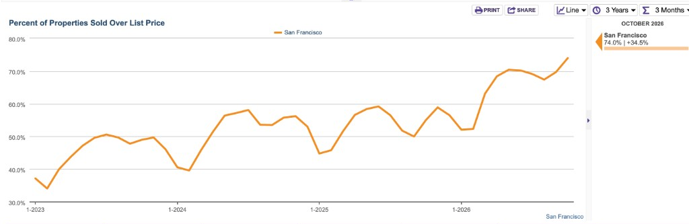

When I was studying law in Italy, I used to set alarms in the middle of the night to bid on vintage handbags and accessories at auctions in Japan. I’d buy pieces, fix them up, and resell them. Before an auction, I’d look up what the same bag had actually sold for in similar condition. I could find someone asking twice that amount online, but if the bag was still sitting there, that price told me very little.
I remember one auction for a lot of designer wallets. I’d done my research and set a ceiling, but when the bidding got close to it, I still hesitated. I would have loved to spend less. The problem was that I hadn’t seen another lot with the same mix of pieces, in similar condition, at a price that made sense. I was still within the limit I’d set before the auction, so I kept bidding.
I think about that when buyers in San Francisco ask me, “How much above asking should I offer? If I go that far over list price, am I overpaying?”
I start with recent comparable sales, then consider the property’s differences, the competition, and what you’re comfortable paying. The asking price helps me understand the seller’s strategy. The sold homes help me evaluate the price.
If you’re buying your first home, understanding that process can make the listings you see on Zillow much less confusing.
Is the price I see on Zillow what the seller expects?
Sometimes it’s close. Sometimes the seller expects considerably more.
Imagine you’re searching with a maximum budget of $1.6 million. A home appears at $1.495 million. You save it, send it to your partner, and start imagining yourself living there.
Then it sells for $1.85 million.
How were you supposed to know?
The asking price is the number the seller uses to bring the home to market. The final purchase price is what a buyer and seller agree to. To understand whether a home is realistically within your budget, you need some context about what similar homes have actually sold for.
The property prices used in the examples below are hypothetical.
What happens before a seller chooses the asking price?
Before a home goes on the market, the seller and listing agent usually discuss recent comparable sales, the property’s condition, and what buyers might be willing to pay.
Imagine you’re the seller. You’d want to know what similar homes nearby sold for, what makes yours more or less appealing, and whether repairs, staging, or other preparation could improve the result. You’d also want to understand the costs and timing of selling.
The listing agent may recommend an expected sale range and explain the evidence behind it. Then they discuss the asking price and marketing strategy.
Those numbers can be different. A seller might hope to receive around $1.8 million and choose to list at $1.495 million. Another seller with a similar home might list at $1.795 million.
Both could be hoping for a similar result. They’re taking different approaches to getting there.
Why would a seller list below what they hope to receive?
One reason is visibility.
Buyers search online with price limits. A home listed at $1.6 million can fall outside the results of someone searching up to $1.5 million. A listing at $1.495 million falls within that search.
Some buyers have a firm $1.5 million ceiling. Others may have chosen that search limit while still having the ability to spend more. A seller may hope to reach both groups and attract people who would otherwise have passed over the listing.
Getting buyers through the door matters, too. Photos can miss things that make a house appealing. You might only appreciate the quiet bedrooms, natural light, or connection between the kitchen and garden once you’re inside.
A buyer who wasn’t initially interested may love it in person. They may bring a partner back or mention it to a friend who is also looking. The seller’s hope is that wider exposure leads to more serious interest and stronger offers.
The strategy still depends on buyers responding to the property. A low asking price alone can’t guarantee multiple offers or a particular sale price.
What does the San Francisco data show?
In InfoSparks’ three-month figures ending October 2026, 74% of San Francisco properties sold above list price. That’s roughly three out of four.

This shows how common selling above asking was during that period. It doesn’t tell us how much to add to a particular listing.
The figure includes different property types. When we evaluate a specific house or condo, I narrow the analysis to homes that buyers would reasonably consider alongside it.
Why do so many sellers use the same pricing strategy?
Imagine you’re selling your home, and several similar houses nearby are listed at prices designed to attract attention. If you list closer to what you hope to receive, your home could look expensive beside them—even if they eventually sell for as much as yours, or more.
Buyers browsing Zillow may save those lower-priced homes and skip yours. Your house could also fall outside their search filters while competing listings appear within them.
That gives sellers another reason to choose a lower asking price. They want their home to be considered alongside the others buyers are touring. As more sellers follow that approach, it becomes a pattern buyers need to recognize.
Two similar homes might be listed hundreds of thousands of dollars apart and ultimately sell for similar amounts. A higher asking price can also attract competition and sell well above it. Comparing asking prices alone won’t reliably tell you what either seller expects.
Does an unusually low asking price mean there’s a deal?
It gives us a reason to investigate.
Say a house is listed at $2.995 million and the closest comparable homes sold around $3.5 million. I’d ask what explains the gap.
Does it need substantial repairs? Is it smaller? Does it lack parking? Is it on a busier street? Are there issues in the disclosures that aren’t apparent in the photos?
If it’s closely comparable to those sales, an offer of $3.4 million could still be reasonable even though it’s more than $400,000 above asking. If $3.3 million is your ceiling, I’d want to look at those sales before asking you to rearrange your day for a showing.
Publicly listed homes can still present opportunities. We need to understand the property and its price before deciding whether we’ve found one.
You should understand how your agent arrives at a number
An agent may say, “I’ll review the comps and tell you what I think it will sell for.”
That’s part of the job. You should also understand how they reached that estimate. Which sales did they use? Why were those good comparisons? What makes this home worth more or less?
I go on broker tour on Tuesdays and keep an Excel sheet with notes on the homes I’ve seen. When one sells, I can compare the closing price with what I remember about the house.
The photos might show a beautiful kitchen, but I’ll remember that the bedrooms were on different floors or that the backyard was down a flight of stairs. Those details change how useful that sale is as a comparison.
My second master’s degree is in business analytics, and I care about understanding what sits behind a number. A neighborhood median gives us context. The individual sales and their differences help us evaluate a specific property.
How do I choose comparable sales?
I usually start with homes that closed in the last 90 days.
In the San Francisco neighborhoods I follow, I’ve been seeing pricing differences within a month or two. An older closing can reflect different market conditions. I also check when a property went into contract, when that information is available, because its price may have been agreed several weeks before closing.
If there aren’t enough close matches, I go back further and explain why an older sale is still relevant. A slightly older sale of a similar house can be more useful than a recent sale of a very different property.
I look at the location, property type, size, condition, layout, parking, and outdoor space. For condos, I also consider floor level, noise, light, HOA dues, and the building’s condition and finances.
A sale in another neighborhood may involve a different buyer pool and different preferences. Even within one neighborhood, the particular block can matter.
Why the same feature matters differently at different prices
In my experience, a condo buyer may happily give up an extra half bathroom for a quieter top-floor home with better light and no upstairs neighbors.
The conversation can change with a single-family home around $4 million or $5 million. Buyers at that price may expect an en-suite primary bathroom and enough bathrooms for family and guests. I’ve toured beautiful homes where the lack of a primary bathroom became a sticking point. Buyers loved the house but were reluctant to spend that much while making that compromise.
That’s why I record more than bedroom counts and square footage. I note the bathroom configuration, light, noise, condition, and layout, alongside feedback I hear from buyers and agents.
A quieter block can change the competition
Imagine two homes with similar square footage, bedrooms, and parking. One sits on a quiet block where a comparable home rarely becomes available. The other is on a busier street.
For someone who has been waiting for that particular block, those may feel like different purchases. I’d check how often similar homes have come up there, ask the listing agent about current interest, and discuss how many alternatives you would be equally happy buying.
I also look at what you may need to spend after closing. If one home has a recent roof and the other needs replacement, I’d want a roofer’s assessment and an estimate before deciding how to account for that work.
These details help us decide which sales deserve the most weight.
A Zillow exercise to do before your next tour
You can begin developing your own understanding before you’ve toured dozens of homes. Start with five sold properties you would actually have considered buying.
1. Search sold homes from the last 90 days
Search your preferred neighborhood, change the listing status to Sold, and set the sold-date filter to the last 90 days where available. Otherwise, check the closing date in each property’s price history.
If there aren’t enough useful matches, expand the timeframe gradually and keep the older sales clearly dated.
2. Compare the same property type
Compare single-family houses with single-family houses and condos with condos.
Read descriptions carefully for TICs, co-ops, multi-unit properties, or other ownership arrangements. A listing that looks similar in photos can involve a different purchase.
3. Choose homes with similar characteristics
Look at square footage, bedrooms, bathrooms, condition, parking, and outdoor space. Pay attention to the block.
For condos, also look at floor level, light, noise, HOA dues, and the building itself.
4. Record asking and sold prices
Write down the original asking price, any price changes, the final sold price, and the closing date. Add a few notes about meaningful differences.
| Home | Original asking price | Final sold price | What you noticed |
|---|---|---|---|
| Home A | $1.495M | $1.80M | Renovated, garage, usable backyard |
| Home B | $1.795M | $1.82M | Similar size and condition |
| Home C | $1.595M | $1.75M | Similar size, more dated interior |
These are hypothetical examples.
Home A looked much cheaper than Home B when they were listed. Their closing prices were only $20,000 apart.
5. Ask which homes you would have bought
Would you have been happy buying any of them at their final prices?
You may discover that your budget buys more than you expected. Or you may find that the homes catching your eye consistently close above your ceiling.
Either answer helps us refine the search. You might decide that location matters more than a renovated kitchen, or that a top-floor condo could work better for your budget than a single-family home.
That preparation can save you time and help you set expectations before you get attached to a listing.
A pending price may still be the asking price
When a home changes to Pending, the seller has generally accepted an offer, but the displayed number may still be the asking price.
Keep following it until the sale closes and the final price is reported. A house listed at $1.495 million and marked pending may already be under contract at a substantially different number.
If you toured it, save your notes. Comparing what you saw with the eventual closing price helps you build familiarity with the market.
When is offering another $50,000 worth it?
By offer day, I want us to have three numbers in mind.
What the comparable sales support. This gives us a range for the house, accounting for the differences between properties.
What it might take to get the offer accepted. Other buyers may be looking at the same sales. I ask the listing agent what they can share about interest and what terms matter to the seller. Sometimes the closing date or flexibility on move-out is where we can improve the offer.
What you’d be comfortable paying. If the house is missing a must-have, we can move on. If it meets your needs and the thing you’d give up is a nice-to-have, I’d ask how many other homes you’ve seen that come this close.
I understand the instinct to save $50,000. It’s a lot of money. When the higher number is still within the ceiling you set, I ask two questions:
- If another buyer got the house for $50,000 more than our offer, would you be comfortable moving on?
- If the seller accepted that higher number tonight, would you still feel good about it tomorrow?
Sometimes those answers tell us to hold. Sometimes they tell us you’d be comfortable offering more for this particular home. A strong offer can make sense when the sales support it, the home meets your needs, and the number fits the budget you set before offer day.
I could usually find another bag if I missed one at auction. If you’ve spent months looking for the right combination of layout, outdoor space, and location, you may already know how rarely it comes together. Doing the homework early helps you recognize that moment and choose an offer you can stand behind.
If this article helped you understand even a little more about how home pricing works in San Francisco, I’m really glad.
If you’re thinking about buying your first home here, I’d love to help you navigate the market and feel clear about each decision along the way. You’re also welcome to send me a listing if you’d simply like an opinion. Email me at greta@mosaikrealestate.com—I’m happy to help.
Greta Tengattini